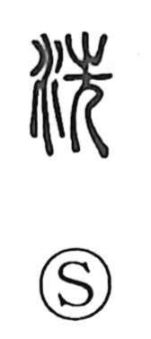

Explanation
A picto-phonetic graph with 先 as the phonetic, giving the on-reading sen. In early script 先 combines 止, the footprint (whose old form matches 之), with the human-legs element, expressing movement “to go.” When the water dots were added to this 先, the sense became washing. Oracle-bone forms also show a variant that places 止 over 舟, a shallow water tray, vividly picturing feet being washed in a basin. From this concrete scene the character came to mean “to wash,” especially “to wash the feet,” and by extension to wash away involvement. In antiquity it was customary on returning from travel to purify oneself by washing the feet to remove the defilement of other soil; Du Fu’s Pengya Xing includes the line, “I warm the water and wash my feet.”